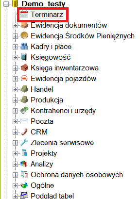
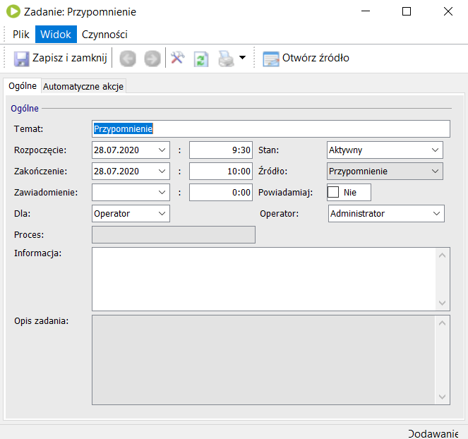
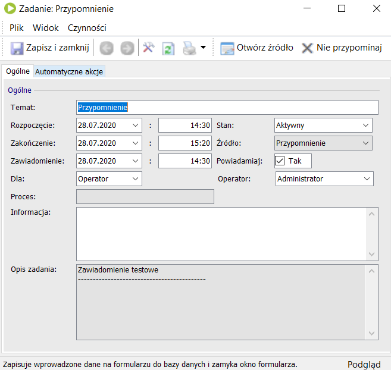
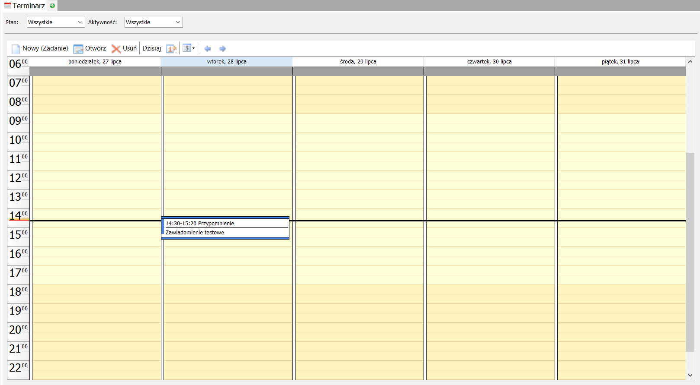
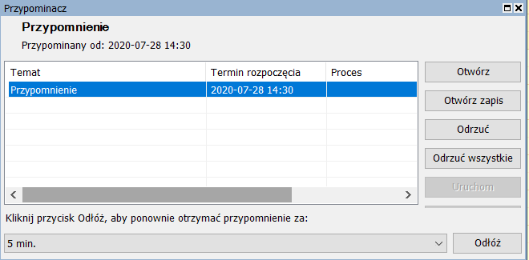

Korzystanie z Terminarza
Po wykonaniu następujących kroków będą Państwo w stanie utworzyć powiadomienie w Terminarzu.
1 Z listy obiektów po prawej stronie okna Enovy wybieramy pozycję Terminarz.

Po kliknięciu w tą pozycję powinien się nam ukazać kalendarz.
2 Aby utworzyć powiadomienie klikamy dwukrotnie w interesujący nas dzień na kalendarzu. Powinno się wyświetlić następujące okno:

W wyświetlonym oknie możemy uzupełnić następujące pola:
- Temat,
- Rozpoczęcie (podajemy datę rozpoczęcia)
- Następnie obok godzinę rozpoczęcia
- Zakończenie (podajemy datę zakończenia)
- Następnie obok godzinę zakończenia
- Dla (wybieramy czy powiadomienie ma dotyczyć operatora, roli bądź innego obiektu)
- Operator - powiadomienie pokaże się konkretnemu operatorowi
- Rola - powiadomienie pokaże się wszystkim osobom przypisanym do roli
- Inny obiekt
- Informację (wpisujemy informację która ma się wyświetlić)
- Stan (Stan powiadomienia)
- Powiadamiaj (zaznaczamy jeśli chcemy aby powiadomienie się pokazało w oknie)
- Operator

Po wypełnieniu pól klikamy 'Zapisz i zamknij'. Nasze powiadomienie powinno być od tego momentu widoczne na kalendarzu terminarza.

W momencie wybicia godziny powiadomienia pojawi się nam okienko z naszym przypomnieniem.

Możemy je otworzyć, odrzucić bądź odłożyć na wybrany przez nas czas.